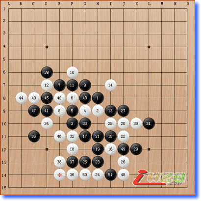
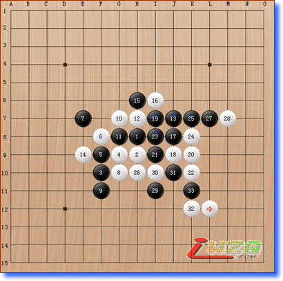
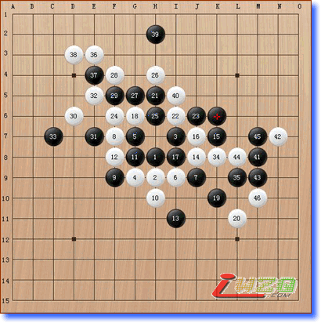

我热爱五子棋，没有理由......
已经热爱了10年，以后还会继续热爱下去......
可能是喜欢这种思考的感觉，而且，从没有惧怕过任何高手，哪怕我知道我根本没有赢的机会，但是一样会勇敢地亮剑！
也曾多次和职业棋手较量，击败过全国赛第21名、第34名的棋手......虽然，已经过去两年多的时间，可有时想起来，还很让人振奋，那是一种奇妙的感觉，因为我完全沉浸在五子棋的世界，我知道那是一种无止境的追求，就像《棋魂》里面的Sai一样，毕生在追求围棋的至高境界，追求那一步“神技”......
五子棋里有哲学，有孙子兵法，有人生观。这是10年来从五子棋中悟出来最重要的东西！
追忆颠峰时刻，追忆人生中难以忘怀的几次比赛，如果，你也喜欢五子棋，请和我一起体会、一起神往......

这是我在第五届北京市高校五子棋邀请赛上第五盘和北航冠军伊广野比赛的一盘棋，我执白获胜，第8手棋的失误一度让我陷于苦战，但第26手棋是整场比赛的转折点。

这是我在第五届北京市高校五子棋邀请赛第七盘和北科冠军隋玉亮比赛的一盘棋，白棋第34手棋之后，我长考了5分钟，投子认负，第19手棋是我的败招。

这是2005年5月15号三校友谊赛上，我和矿大冠军叶冬争夺友谊赛冠军的一盘棋。这可能是我10年来下得最出色的一盘棋，极佳的状态使我整盘棋都压制住了对手。第39手棋是整盘比赛的转折点，最终我执黑完胜。
又看了一遍棋谱，仿佛又回到了两年前，那个五子棋颠峰时刻将永远印刻在我的脑海里。我想，未来的某一天，我会回到五子棋赛场，因为，我还没有实现自己的一个五子棋愿望，就是参加全国赛，与来自全国各地的五子棋高手展开较量。
结果不重要，重要的是享受过程。